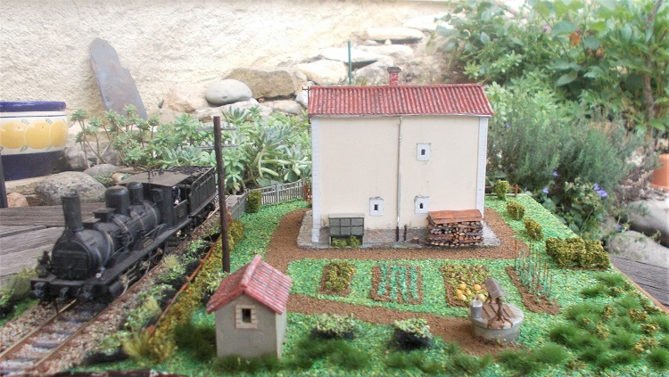
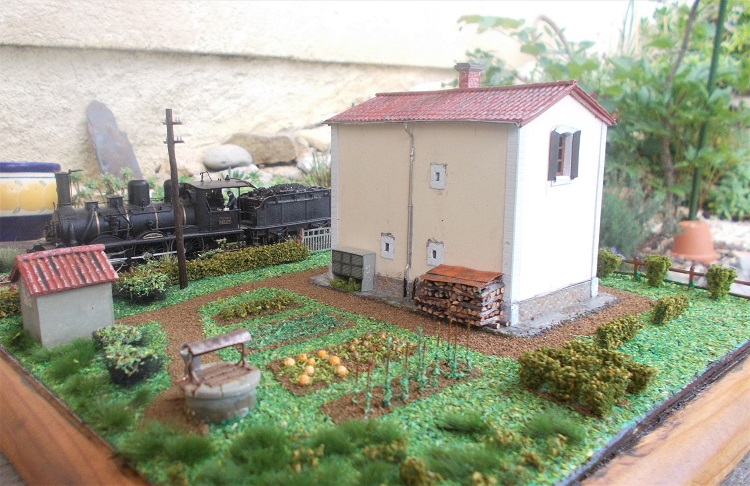
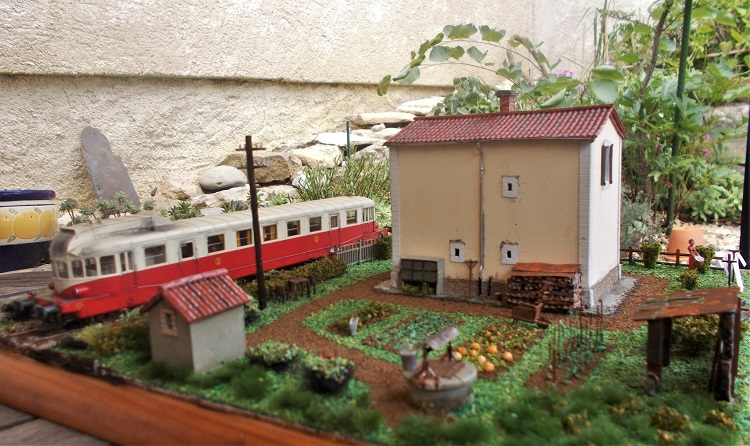
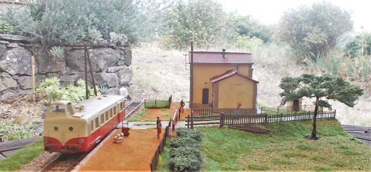
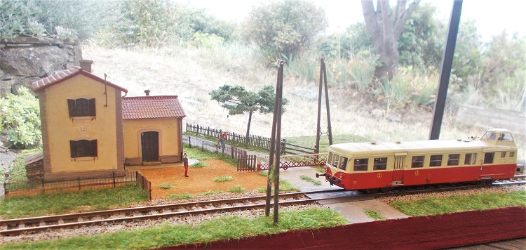
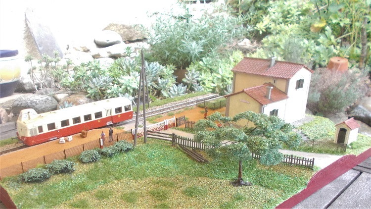

Maquette et texte de Jean-Pierre Lescure
Maquette du passage à niveau de la Scierie Delmas à Belvianes, construite sur la base des plans présentées sur la page "passage à niveau"
Ce passage à niveau (PN) se situe sur la commune de Belvianes-et-Cavirac.
Cette commune est implantée entre Quillan et le défilé de La Pierre Lys.
La ligne de Chemin de fer, est celle, qui au départ de Rivesaltes dans les Pyrénées Orientales, atteignait Quillan en 1904. Elle avait atteint St Paul de Fenouillet en 1901, mais les nombreux ouvrages à réaliser entre Caudiès-de-Fenouillèdes et Quillan, avaient retardé son ouverture, à cette date.
L’architecture de ces maisonnettes est différente de celle des maisonnettes de la ligne Carcassonne/Quillan, ouverte en 1878. Autant ceux de C/Q sont de plein pied, en forme de T (voir plus bas), ceux de R/Q ont adoptés la disposition « unifiée ». C’est à dire avec un rez de chaussée comportant une salle commune, un cellier sur terre battue et un escalier pour monter à l’étage. Celui-ci offrait sur le palier l’accès à deux chambres. La salle de séjour comportait une cheminée à feu ouvert et un évier. La « grande » chambre, possédait elle aussi une cheminée, mais pas la petite. La cheminée étant adossée au refend de la maisonnette, les concepteurs ont certainement pensé que ce refend chauffé, tempérerait la petite chambre. Chaque PN avait son puits et son « lieux » pour le confort des occupants. La parcelle de terrain attenante, permettait de faire un jardin potager.

Dans ces années là, le téléphone était utilisé pour la sécurité, mais gares et maisonnettes n’avaient pas l’électricité. Bien que depuis 1900 une centrale était en fonctionnement au dessus d’Axat, la compagnie du MIDI n’avait pas jugé utile d’équiper gares et maisonnettes de la fée électricité.
Les passages à niveau étaient équipés de barrières roulantes de 5 et 6 m de largeur, suivant l’importance de la route croisée.
Cette ligne ouverte en 1904 dans sa totalité de Carcassonne à Rivesaltes a assuré le service voyageurs avec une longue attente en gare de Quillan qui n'a pas aidée à sa popularité... La partie de la ligne entre Quillan et Rivesalte n'a jamais vu circuler d'autorails, seulement des trains tractés par des locomotives à vapeur.
En effet le service voyageur a été suspendu sur cette section en 1939 ! Ce service étant transféré sur la route à cette date. Des bus de nos jours continuent à proposer des courses jusqu’à Perpignan gare SNCF, depuis Quillan. Mais comme à l’époque du chemin de fer les correspondances ne sont pas assurées en gare de Quillan...
Le service marchandises, toujours avec des locomotives à vapeur, a perduré jusqu’en 1948 sur la section Rivesaltes/Quillan. Toutefois dans les dernières années seules les locomotives montaient à Quillan depuis Axat pour être retournées sur la plaque du dépôt. Après 1948 ce seront des A1A-A1A type 62000 diesel Baldwin de Béziers qui vont assurer les trains de marchandises jusqu’à Axat seulement. Pour peu de temps, car ces machines étaient agressives pour la voie. Elles ont été remplacées par les 040 DG futures BB 63000, nouvellement livrées à la SNCF.

Extrait du profil Cepie - St-Martin-Lys - gros plan sur la partie Quillan / St Martin et ses passages à niveau ( transmis par Yves Guimezanes )
Les passages à niveau de la section Quillan/Belvianes auront assuré le service de sécurité pendant 44 ans, puis quelques mois en 1952 (voir plus bas). Ils ont conservé leurs barrières roulantes toutes ces années. Tout en sachant qu’à cette époque elles restaient fermées. Pouvant être ouvertes à la demande, si aucun train n’était annoncé. Les maisonnettes ont dû recevoir un jour l’électricité, mais tardivement…
De nos jours seule la maisonnette de l’entrée de Belvianes a été démolie pour améliorer l’accès au village. Reste les trois autres sur cette même commune. Elles sont habitées. Celui de la scierie « Delmas » portait le N° 50.

Depuis le N° 55 (n° 7 des plan d'implantation) sur les hauteurs d'Axat, en remontant vers Quillan, il y a le N° 54 (n°6) près de la galerie, après la gare d'Axat. c'est un PN "piétons". Puis avant le tunnel routier et l'entrée du tunnel ferroviaire de la Pierre-Lys, il existait un autre PN "piétons" le 53 (n° 5), mais il n'existe aucun vestiges. Arrivé à Belviane on rencontre le PN 52 (n° 4) près du viaduc métallique, ensuite la halte PN N° 51 (n° 3) et nous arrivons au PN de la scierie, le 50 (n° 2).
Le 49 (n° 1) étant celui qui a perdu sa maisonnette.
En arrivant à Quillan, le 48 est près de la nouvelle gendarmerie. Mais celui-là avait été construit avant 1878, pour assurer la sécurité des trains qui manœuvraient en gare pour atteindre les différentes voies, entre autre celle qui était implantée le long de la route.
Nous sommes en 1952, un énorme éboulement s'est déroulé dans la Pierre Lys, isolant Axat et son canton, d'une ouverture par la route vers Quillan, Limoux et Carcassonne. Les travaux vont durer de nombreuses semaines.
La section Quillan Axat va être ouverte pendant les travaux pour désenclaver Axat.
Les VH Renault qui assurent le service voyageurs, à cette époque, sur la ligne de Carcassonne/Quillan, vont servir aux habitants de la Haute vallée de l'Aude pour se rendre en sous-préfecture ou préfecture. Matin et soir l'autorail prolonge son service vers Axat.
En 1952, donc, pour assurer ce service voyageurs temporaire, vers Axat, les PN 48 à 52 entre Quillan et Axat vont retrouver du service pour assurer la sécurité, pour toute la durée des travaux de déblaiement. Mais dès ceux-ci achevés et la route praticable, le service est interrompu pour toujours...
La section de ligne Quillan/Axat est mise en sommeil en 1956. Il y aura bien des demandes de réouverture de cette section par les élus et les habitants de la Haute vallée, mais la SNCF argua de la vétusté des ouvrages… Raison sans fondement. D'autant que le seul ouvrage, qui aurait pu poser problème, est le pont cage près du tunnel du Bourrec, qui avait été dynamité en aout 1944 par la résistance. Après réparation il avait été déclaré bon pour le service par la SNCF.
Confirmation, quand en 1962 une usine de traitement / broyage de la dolomie s'installe dans les emprises de la gare de St Martin-Lys. La ligne est rouverte jusqu’à cette gare, pour assurer l’évacuation des agrégats de dolomie produits par cette usine. En 1985, à la faveur de la modernisation des voies DC MIDI entre Narbonne et Port Bou, les rails plus lourds sont réemployés sur la ligne et vont permettre que celle-ci puisse accueillir des wagons de marchandises de plus fort tonnage. L’usine perdra son accès au chemin de fer en 1998, la SNCF ne voulant plus assurer ce service... contre l'avis de l'industriel.
Le reste de la ligne entre Quillan et La gare de Saint Martin Lys est déposée seulement en 1990… pour revendre l'acier des rails, dommage...
En 2002, le Train du Pays Cathare et des Fenouillèdes débute ces circulations touristiques, mais cela est une autre histoire...
Le pont cage du Bourrec sera une autre fois endommagé par un camion en 2011, mais à la demande du TPCF, il sera de nouveau réparé et remis en service. Ce ne sont que les autorails, trains découverts et … vélos rail qui empruntent de nos jours la section Axat/St Martin-Lys."
Jean-Pierre Lescure, juin 2023.
La ligne Carcassonne / Quillan a été ouverte en 1876 jusqu’à Limoux et en 1878, jusqu’à la Cité des trois quilles.
Pour les passages à niveau gardés de cette section de ligne
des maisonnettes ont été bâties partiellement sur une cave, avec un accès latéral.
Le plan en forme de T offrait, une salle de séjour/cuisine et deux chambres. Un puits était là, pour fournir l'eau nécessaire aux occupant de la maisonnette. Par contre pas d'information sur un WC extérieur. Sujet à approfondir…
Jean-Pierre Lescure, juillet 2023.

Extrait du profil Cepie - St-Martin-Lys en complément de la partie déjà présentée plus haut : partie Cépié / Quillan et ses passages à niveau - ceux avec des maisonnettes comme la maquette ci-dessus ( transmis par Yves Guimezanes )
Maquette de la halte de Belvianes réalisée par Jean-Pierre Lescure
  